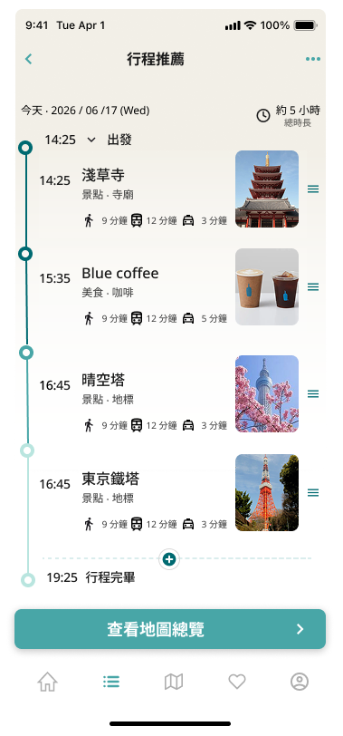
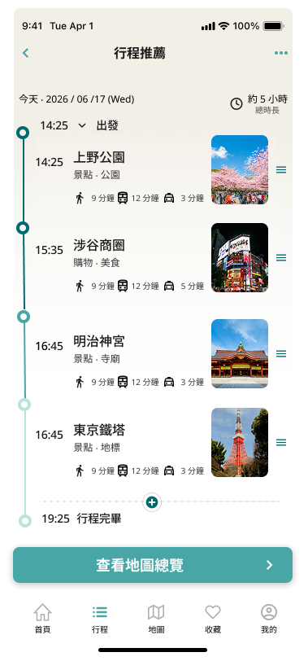
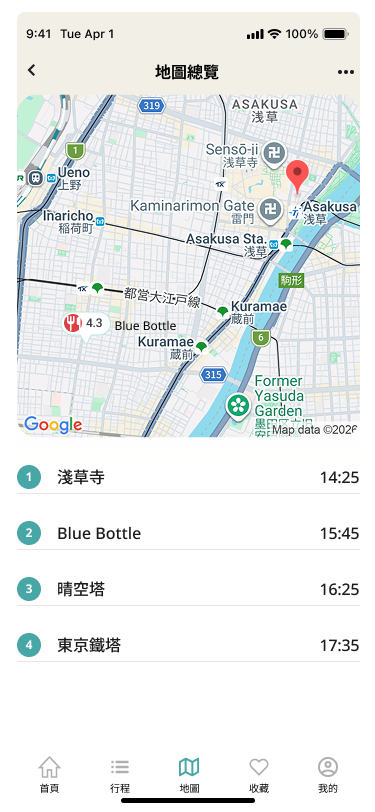
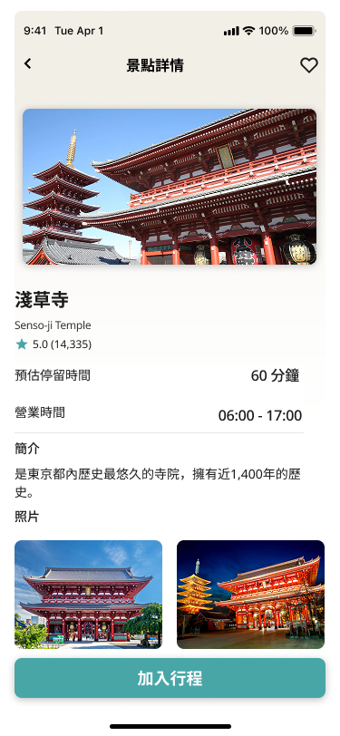
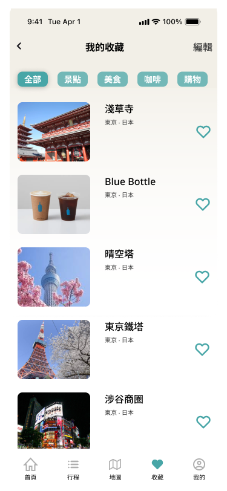

04
主要畫面

Dashboard
首頁
將使用者落地後最急需的兩項資訊——當前時間與所在位置——整合在首屏，讓使用者無需任何操作，即可立即掌握剩餘可用時間，幫助使用者在最短時間內開始探索城市。

Itinerary
行程安排
以時間軸呈現行程，讓使用者一眼掌握每個景點的出發時間與停留時長。設計核心是降低「我還能去哪裡」的判斷成本，而非呈現更多資訊。系統重新計算最佳路線與停留時間，降低重新規劃的成本。

Reorder Itinerary
行程重新排序
新增或更換景點後，系統自動重新計算路線與時間，無需使用者手動調整。目的是讓臨時改變計畫的成本降到最低，把決策彈性還給使用者。

Map
地圖
出發前快速確認景點順序、距離與交通時間，讓使用者在行動前就能判斷「這條路線在時間上是否可行」，避免到現場才發現趕不完。

Place Detail
景點詳情
在使用者將景點加入行程之前，提供足夠的資訊讓他們自行評估，減少因資訊不足而做出後悔決定的機率。讓每一個加入行程的選擇，都是有意識的決定。

Saved
收藏景點
先收集，再決定。收藏功能的設計邏輯是將決策壓力從「出發前」移到「抵達當下」——讓使用者依當下時間與位置做出最終選擇，把有限的時間留給真正重要的選擇。